在同一平面内，由3条或3条以上不在同一直线上的线段首尾顺次连接组成的平面图形，我们称为多边形。
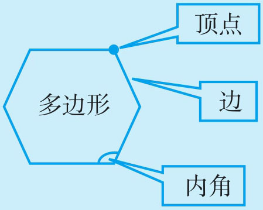
一个多边形的顶点数、边数、内角数是相等的。
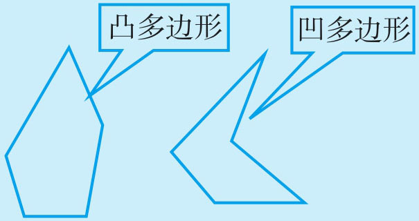
如果不说明，我们一般都指凸多边形。
如果多边形的各条边都相等，我们称它为正多边形，正多边形所有的内角也相等。如正三角形（等边三角形）、正四边形（正方形）、正五边形……
多边形所有内角相加得到多边形内角和，它的和是有一定规律的。
例1 我们知道多边形中三角形内角和是180°，要求多边形内角的和是多少度，就利用转化思想将多边形内角和转化成求几个三角形内角的和。请同学们分析下面的哪种分法求五边形内角和简单而且无错误。
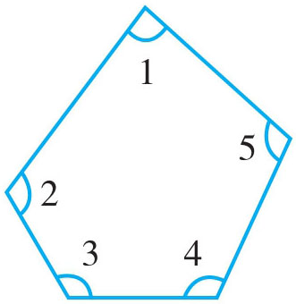
图1
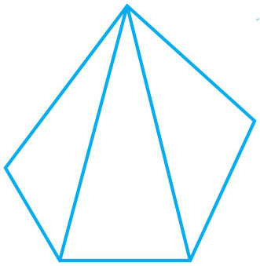
图2
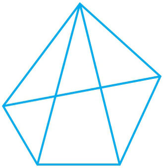
图3
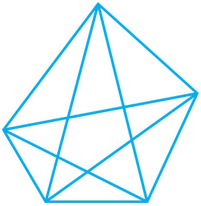
图4
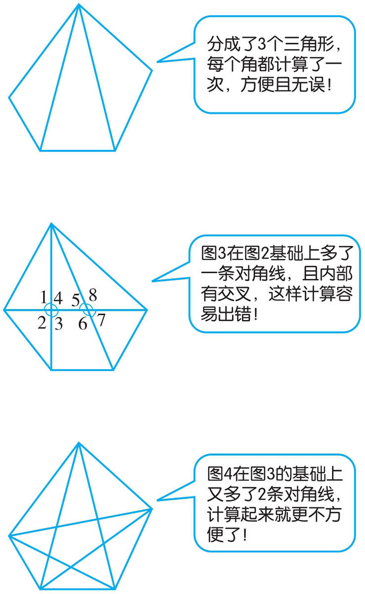
图2的分法最简单。
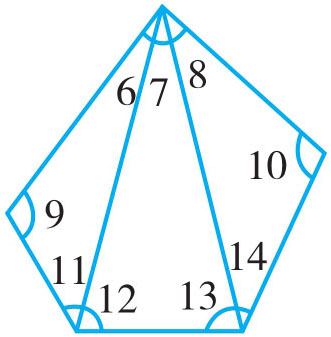
图2内角和=∠6+∠7+∠8+∠9+∠11+∠12+∠13+∠14+∠10=(∠6+∠9+∠11)+(∠7+∠12+∠13)+(∠8+∠10+∠11)=180°+180°+180°=180°×3=540°。
只有从一个顶点引出的所有对角线将多边形分成的三角形个数，才是计算多边形内角和最简便且最无误的方法。
例2 计算四边形、五边形、六边形、七边形等多边形内角和，推出多边形内角和的一般计算方法。
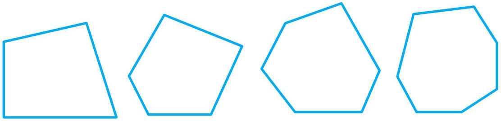
首先要把多边形先转化成三角形，计算出几种多边形的内角和，再通过边数与三角形个数的对应关系，推出求一般多边形内角和的计算方法。为便于直观推理，我们可以利用表格，观察数据间的变与不变关系以发现其规律。
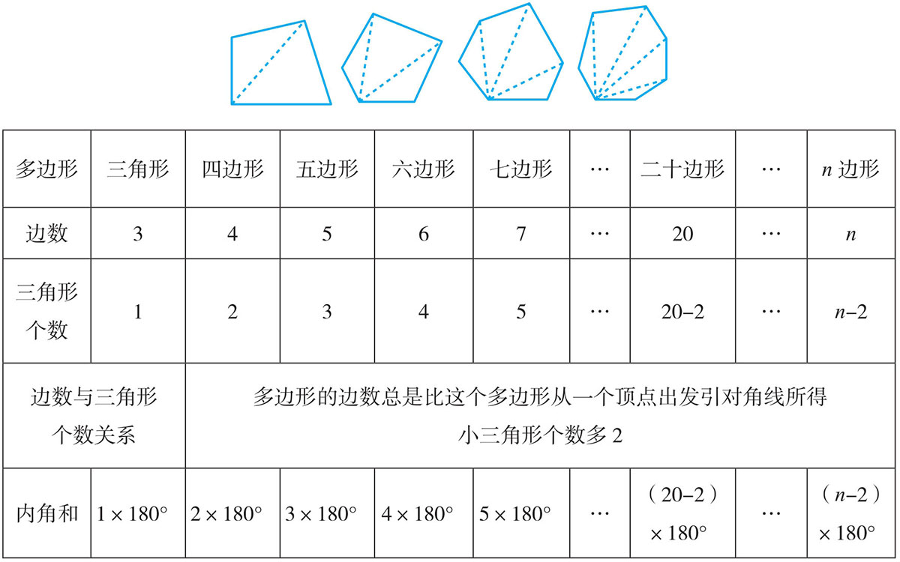
多（n
）边形内角和为：(n
-2)×180°。
例3 求出下图中x 的值。
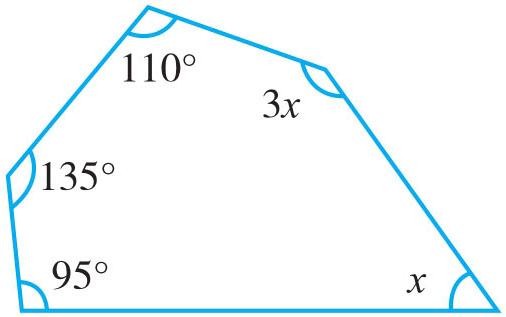
上图是一个五边形，可以利用公式(n -2)×180°求出它的内角和，再用等量关系列出方程，并求出解。
95°+135°+110°+3x +x =(5-2)×180°
340°+4x =540°
4x =200°
x
=50°
例4 一个多边形的每条边相等，则每个角也相等，这种多边形叫正多边形（如下图所示）。一个正多边形的一个内角是120°，这是一个正几边形？
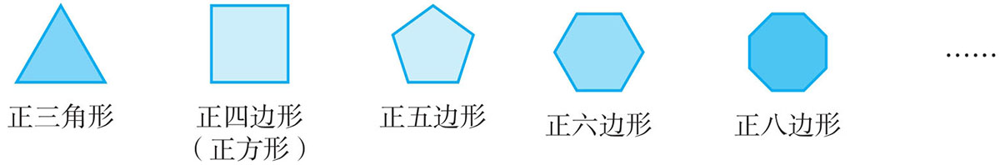
正多边形的边数与它内角的个数是一样多的，且正多边形不但每条边的长度相等，它的每个内角度数也是相等的。因此，我们就可以从边与角这两个切入点去思考，建立内角和相等的等量关系，从而列出方程求解。
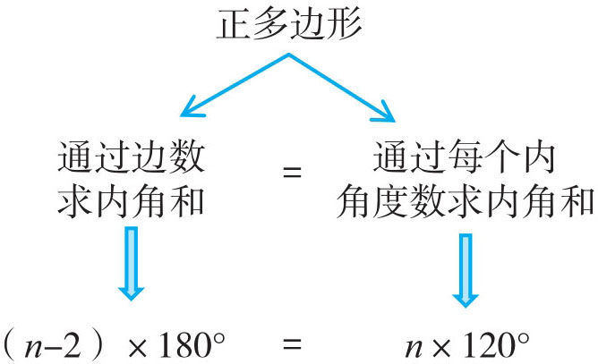
解：设正多边形有n 条边。
(n -2)×180°=120°×n
180°n -360°=120°n
180°n -120°n =360°
60°n =360°
n =6°
答：这是一个正六边形。
例5 前面我们讨论了多边形的内角和，和内角的有关问题，有时我们还求多边形的外角的相关问题，那什么是多边形的外角呢？——多边形的外角是指多边形的内角的一条边与另一条边的反向延长线所组成的角（如下图五边形）。如果在一个四边形的每一个顶点处各取一个外角，它的外角和又是多少度呢？
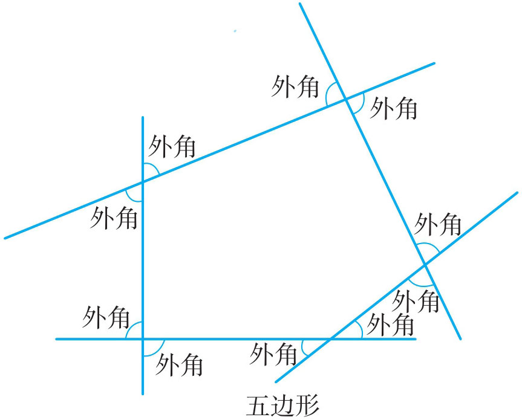
四边形每一个顶点处都有两个外角，若只取一个外角，则它与相邻的一个内角和是180°，这样就有4个180°，再减去4个内角的和，就是这4个外角的和。
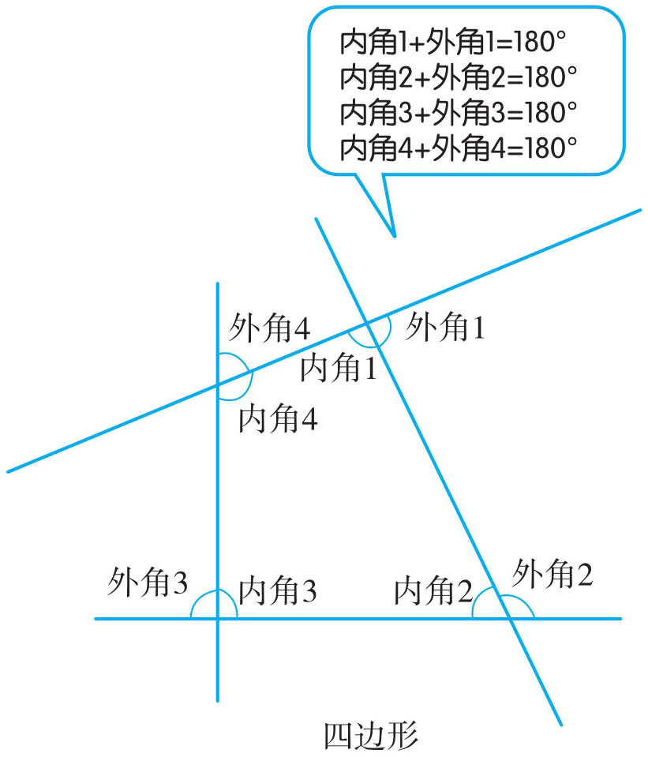
因为：内角1＋外角1＋内角2＋外角2＋内角3＋外角3＋内角4＋外角4=720°，又因为：内角1＋内角2＋内角3＋内角4＝(4-2)×180°=360°
所以：
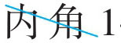
＋外角1＋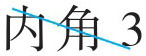
＋外角2+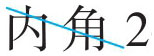
+外角3+ +外角4+( + +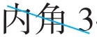
+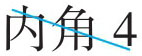
）=外角1+外角2+外角3+外角4=720°-360°=360°180°×4-(4-2)×180°=720°-360°=360°
1．一个八边形的内角和是多少度？
2．求下图中x 的值。
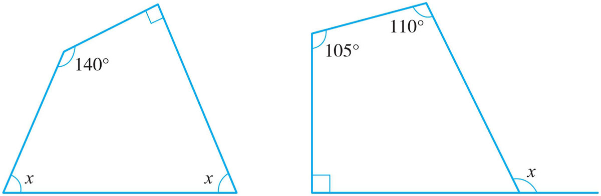
3．想一想：每个内角都是锐角的多边形有多少个，是几边形？每个内角都是直角的多边形有多少个，是几边形？每个内角都是钝角的多边形有多少个？
4．一个多边形的内角和是1620°，它是几边形？
5．一个八边形剪去三个角后，它的内角和是多少度？
6．一个正十边形的一个内角是多少度？
7．一个正多边形的一个内角是162°，这是一个正几边形？
8．五边形外角（每一个顶点取一个外角）的和是多少度？
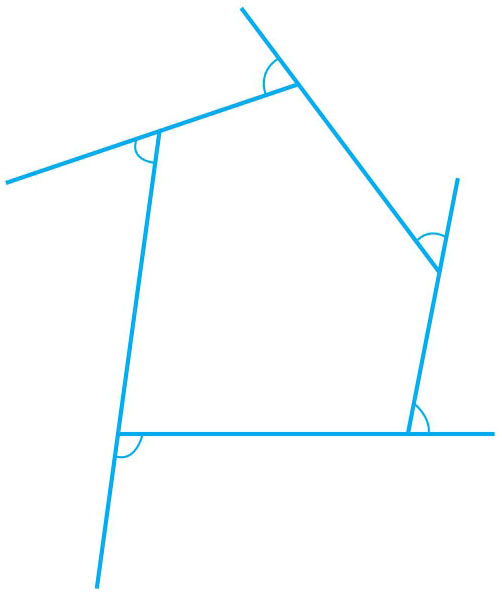
9．在n 边形一边上任取一点P ，连接点P 与多边形的每一个顶点，想想得到几个三角形？如果n =7，你能否根据这样的划分多边形的方法来说明n 边形的内角和等于(n -2)×180°？
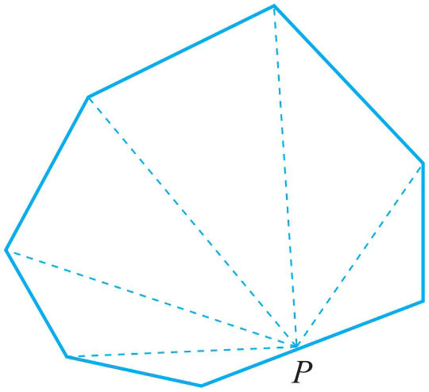